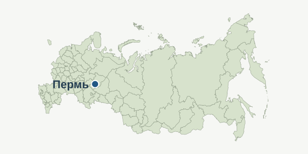

Тема маршрута: создание Перми
От Егошихи к Перми: как рождался город
Этот маршрут рассказывает, как поселение при Егошихинском заводе превратилось в губернский город. Десять остановок знакомят с основателями Перми, её ранними зданиями, торговлей и городской жизнью XVIII–XIX веков.
Карта остановок
Картографическая основа: © участники OpenStreetMap
Нажмите на номер, чтобы открыть фотографию и описание места. Пунктир показывает порядок остановок, а путь по улицам выбирается отдельно.
О маршруте
Начинаем в Разгуляе, где возникло заводское поселение. Затем знакомимся с храмами, транспортом и музейной историей, идём вдоль Камы и по Сибирской улице. Завершаем прогулку у ротонды в парке Горького.
- Главная идея: возникновение города и формирование его исторического центра.
- Формат: прогулка по центральной части Перми с возможностью посещения музея.
- Перед прогулкой: уточните режим работы музея. Фотографии показывают объекты в разные годы и сезоны.

Где находится маршрут
Все десять остановок находятся в Перми, в административном центре Пермского края.